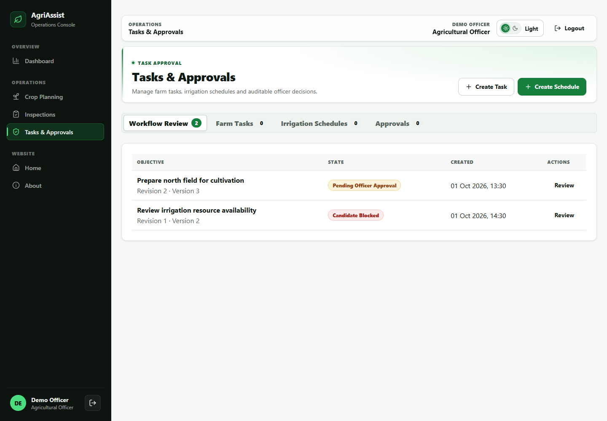
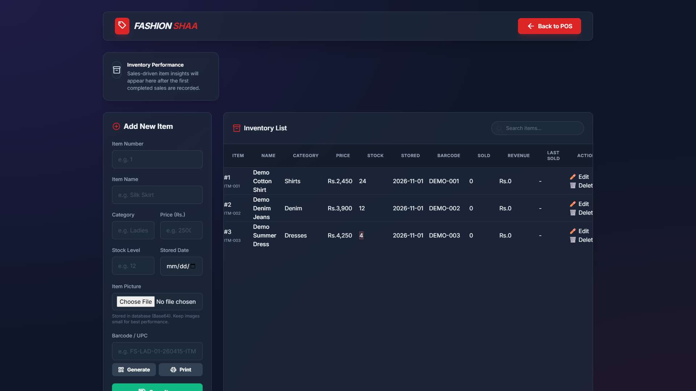
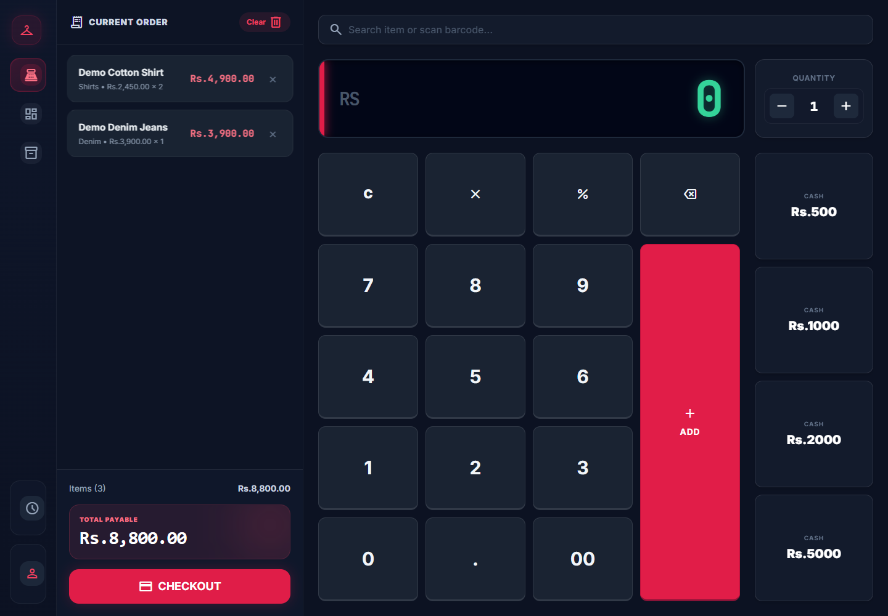
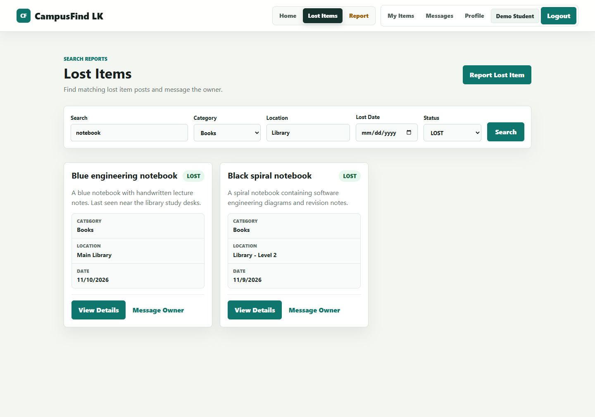

Solo development
Fashion Shaa POS
From the shop counter to the back office.
A desktop retail system that connects checkout, stock, staff, and reporting for a clothing shop.
Explore case studySoftware engineering undergraduate · SLIIT
I’m Chamindu. I build connected applications, from a clothing shop’s counter to the workflows behind it.
Full-stack development, with a growing focus on software quality and reliable delivery.



Build. Connect. Verify.
Selected work
Three projects. Clear contributions.
Explore the screens and the decisions behind them.
Solo development
From the shop counter to the back office.
A desktop retail system that connects checkout, stock, staff, and reporting for a clothing shop.
Explore case studyTeam project · Member 4
A proposal becomes a plan after the right checks.
Farm tasks, irrigation scheduling, and approval workflows that make changes and conflicts explicit.
Explore case studyTeam project · Search
Help a lost item find its way home.
A campus lost-and-found application. My contribution focuses on helping students search reported items.
Explore case study
About me
I’m a third-year software engineering undergraduate at SLIIT, working toward a BSc (Hons) in Information Technology, specializing in Software Engineering.
I enjoy connecting the visible parts of an application with the rules and data underneath. Fashion Shaa POS gave me the opportunity to build across a full retail application; team projects have helped me focus on specific workflows and integration.
I’m developing my skills in full-stack engineering, quality assurance, and DevOps. I’m especially interested in what happens when a request fails, a record changes, or a release needs to be checked.
Follow a skill back to the work.
Small questions with consequences.
Repeating a request should not create duplicate final work. AgriAssist includes an atomic, idempotent approval test case to explore that boundary.
Explore approval engineeringA reviewer approves the version they saw. A revision check makes a stale decision visible and requires a fresh review.
Read the technical decisionThe essentials, in one page
Education, technical skills, and selected projects.
A general CV for software engineering opportunities.
Have a role or project in mind?